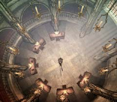
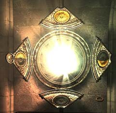

| 概要 | 地図 |
| 淡いヒント集 | ヒント集 | 的確なヒント集 |
| 攻略最短ルート |
| 場所選択に戻る |
修道院
十字架の床
 ・ここはどこか? ・あなたの持った棒を使って何ができるか? ・ろうそくに火を付けると、何か起きるのか?
シャッター
 ・このシャッターはどこにあるか? どうすれば現れるか? ・このシャッターは何をすればよいか? ・このシャッターの周囲にある4つの板はどんな意味があるのか?
墓地

・この墓地には何があるのか? ・この墓地には裂け目があるが、何に使うのか?
脱出

・ハンスは修道僧たちに目を付けられている。彼らに気づかれないようにハンスを脱出するにはどうすればよいか。 ・修道僧たちがどこかへ行ったとしても、歩いて脱出することはできない。どうすればよいか。 ・ハンスの意識を回復するにはどうすればよいか。
| << 次へ |
|
| 場所選択に戻る |
| 概要 | 地図 |
| 淡いヒント集 | ヒント集 | 的確なヒント集 |
| 攻略最短ルート |
Syberia II
| 目次へ戻る | ページの上部へ |